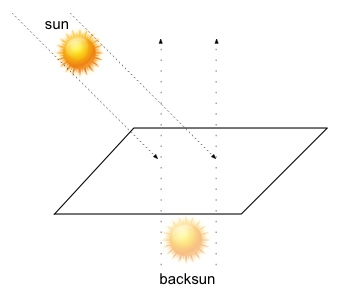

Una buona resa grafica di una scena tridimensionale non può prescindere dagli effetti di illuminazione (shading) per aumentare il realismo delle immagini tridimensionali e dare forma e volume agli elementi che la compongono.
Tutti gli oggetti dell'ambiente, senza alcuna esclusione, vengono illuminati da almeno una luce e in totale, nel codice vengono previste fino a tre luci di scena: una luce direzionale che simula il sole, una seconda luce (backsun) che simula l'illuminazione riflessa dal terreno e una terza luce spotlight per il faro dell'elicottero. Per motivi di performance, non tutti gli oggetti tengono sempre conto delle tre luci e queste vengono accese o spente a seconda delle necessità. Per convenzione, durante la fase di rendering, tutte le luci vengono mantenute attive. Ovviamente la modalità di shading utilizzata è quella standard di OpenGL ovvero GL_SMOOTH.
Per dare l'idea che gli oggetti vengano illuminati dal sole, viene utilizzata una luce direzionale GL_LIGHT1 posizionata (circa) in corrispondenza al punto in cui nella skybox è disegnato il sole. Il colore di tale luce viene inoltre scelto in accordo con i colori delle texture del cielo per dare l'impressione di un'illuminazione crepuscolare.
Con una sola luce (il faro dell'elicottero è di poca importanza
in queste considerazioni) la scena avrebbe un aspetto decisamente
poco naturale (lunare, piuttosto): tutti gli oggetti verrebbero
illuminati da una parte e lasciati completamente in oscurità dal
lato opposto, se si esclude una piccola componente ambientale che
OpenGL abilita di default anche in assenza di luci (è modificabile
con glLightModel, ma
si è deciso di lasciarla invariata). Per evitare questa spiacevole
situazione, si utilizza una seconda luce direzionale (di intensità
ridotta) puntata verso l'asse positivo delle y, in modo da dare
l'impressione che una debole luce provenga dal basso a causa della
riflessione del suolo. Per aumentare il realismo, il colore di tale
luce è scelto mischiando una piccola componente di colore della
texture usata per il terreno.
Ovviamente, la luce usata per
simulare la riflessione non prevede una componente speculare in
quanto questa risulterebbe decisamente poco realistica.
Per posizionare in maniera fissa queste due luci direzionali, viene indicata la loro posizione con due chiamate a glLight effettuate immediatamente dopo alla trasformazione di vista che orienta la scena in accordo con lo sguardo dell'osservatore ma prima che con glTranslate ci si sposti in coordinate mondo. Se non si seguisse questa procedura le luci seguirebbero l'osservatore (nel caso si posizionino dopo a glTranslate) o addirittura seguirebbero lo sguardo della telecamera (se si posizionassero dopo a glLoadIdentity).
La luce del faro dell'elicottero è invece di tipo spotlight, e
viene posizionata durante il rendering del velivolo in modo che sia
solidale con la posizione e la direzione di quest'ultimo.
Sfortunatamente, quando l'elicottero si trova sufficientemente vicino
al terreno, si possono notare le evidenti “scalettature” dello
shading sugli slot che compongono il terreno dovute alla bassa
definizione con la quale questo viene descritto (uno slot è formato
da due semplici triangoli).
Si potrebbe ovviare a questo problema
in due modi: diminuendo la dimensione degli slot (slotSize) in
modo da diminuire la dimensione del difetto visivo, ma in questo modo
si avrebbe una scena più piccola e un terreno dall'aspetto
differente; in alternativa è possibile aumentare i triangoli che
compongono ogni slot ma questo porterebbe ad un deciso calo del
framerate e complicherebbe notevolmente la già complessa procedura
di compilazione del terreno.
Siccome ad una quota sufficientemente
elevata l'effetto è appena percettibile, si è preferito chiudere un
occhio su questo difetto.